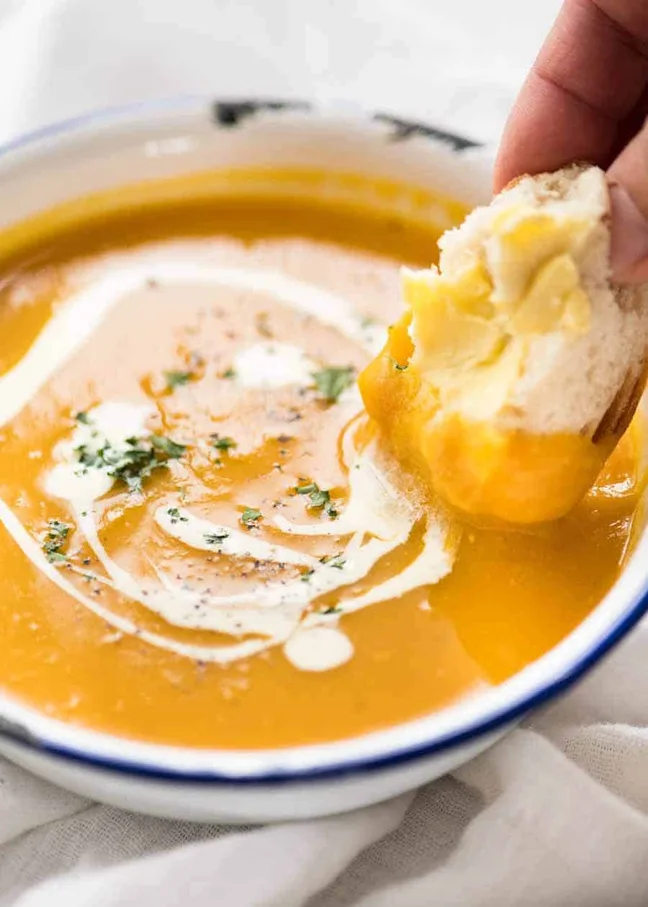

Pumpkin Soup

Recipe Overview
Ingredients
- Pumpkin – Peeled and chopped into large chunks
- Onion and garlic
- Stock/broth and water
- Milk, cream or half and half
- 1 teaspoon of cinnamon
Steps
- Place peeled pumpkin, onion, garlic, broth/stock and water into a pot
- Boil rapidly for 15 minutes until pumpkin is very tender
- Use a stick blender or transfer to blender to blitz smooth
- Adjust salt and pepper to taste, then add either milk OR cream – whichever you prefer
- Serve hot or cold with bread or by itself
Home Page